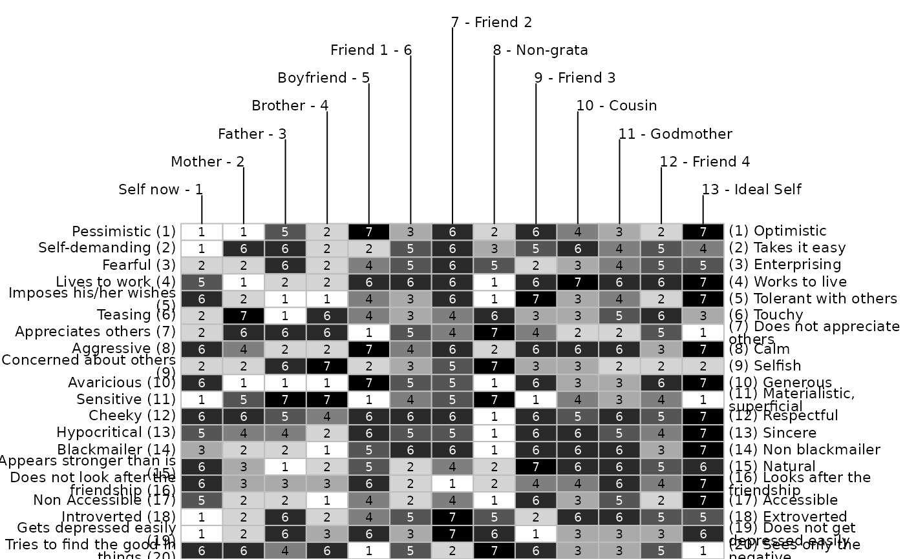
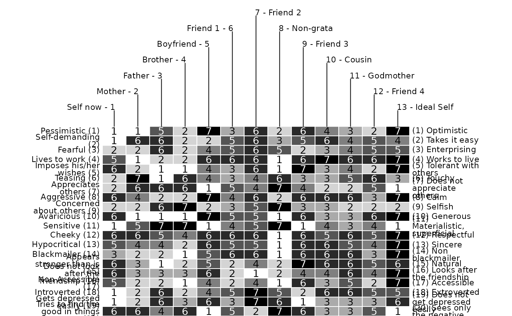
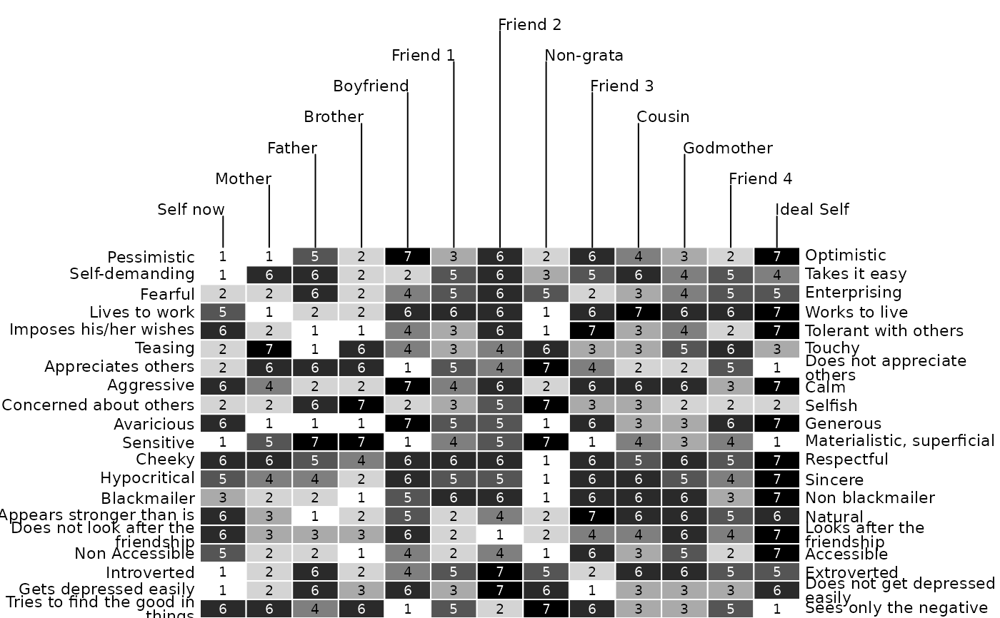
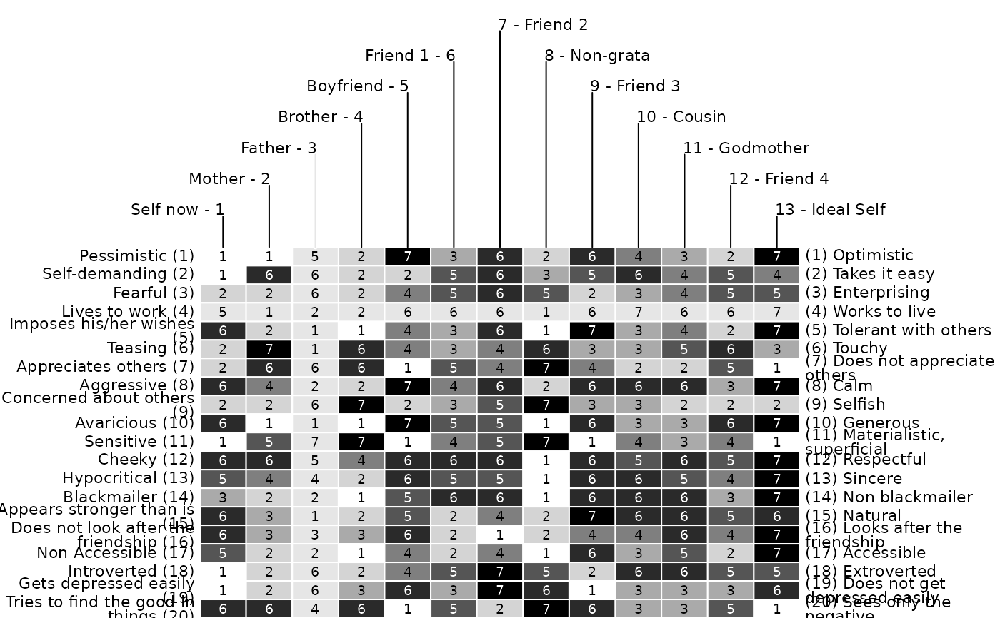
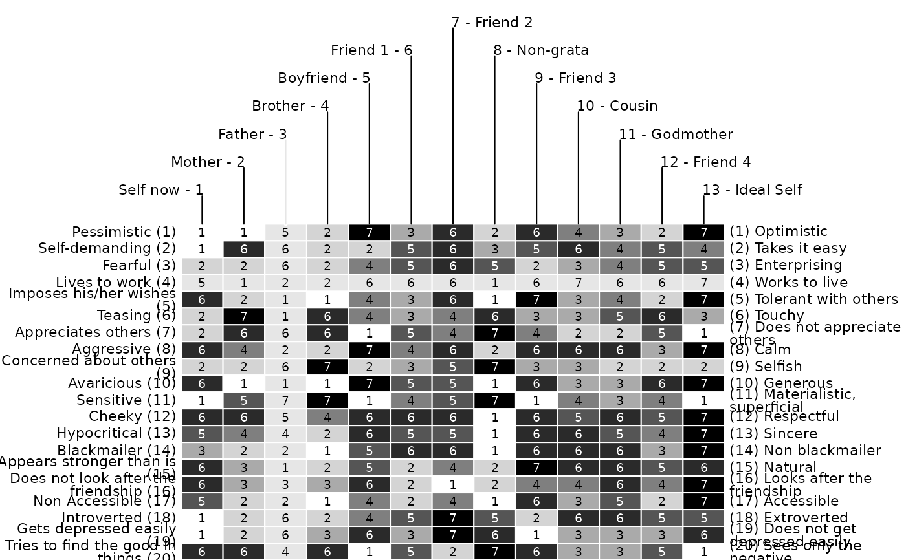

One of the most popular ways of displaying grid data has been adopted from Bertin's (1974) graphical proposals, which have had an immense influence onto data visualization. One of the most appealing ideas presented by Bertin is the concept of the reorderable matrix. It is comprised of graphical displays for each cell, allowing to identify structures by eye-balling reordered versions of the data matrix (see Bertin, 1974). In the context of repertory grids, the display is made up of a simple colored rectangle where the color denotes the corresponding score. Bright values correspond to low, dark to high scores. For an example of how to analyze a Bertin display see e.g. Dick (2000) and Raeithel (1998).
Usage
bertin(
x,
colors = c("white", "black"),
showvalues = TRUE,
xlim = c(0.2, 0.8),
ylim = c(0, 0.6),
margins = c(0, 1, 1),
cex.elements = 0.7,
cex.constructs = 0.7,
cex.text = 0.6,
col.text = NA,
border = "white",
lheight = 0.75,
id = c(TRUE, TRUE),
col.e = "black",
col.c.left = "black",
col.c.right = "black",
col.e.lines = "black",
cc = 0,
cr = 0,
cc.old = 0,
cr.old = 0,
col.mark.fill = "#FCF5A4",
print = TRUE,
...
)Arguments
- x
repgridobject.- colors
Vector. Two or more colors defining the color ramp for the bertin (default
c("white", "black")).- showvalues
Logical. Whether scores are shown in bertin
- xlim
Vector. Left and right limits inner bertin (default
c(.2, .8)).- ylim
Vector. Lower and upper limits of inner bertin default(
c(.0, .6)).- margins
Vector of length three (default
margins=c(0,1,1)). 1st element denotes the left, 2nd the upper and 3rd the right margin in npc coordinates (i.e. 0 to zero).- cex.elements
Numeric. Text size of element labels (default
.7).- cex.constructs
Numeric. Text size of construct labels (default
.7).- cex.text
Numeric. Text size of scores in bertin cells (default
.7).- col.text
Color of scores in bertin (default
NA). By default the color of the text is chosen according to the background color. If the background ist bright the text will be black and vice versa. When a color is specified the color is set independent of background.- border
Border color of the bertin cells (default
white).- lheight
Line height for constructs.
- id
Logical. Whether to print id number for constructs and elements respectively (default
c(T,T)).- col.e
Color of elements.
- col.c.left, col.c.right
Color of left and right conctructs poles.
- col.e.lines
Color of vertical elements lines.
- cc
Numeric. Current column to mark.
- cr
Numeric. Current row to mark.
- cc.old
Numeric. Column to unmark.
- cr.old
Numeric. Row to unmark.
- col.mark.fill
Color of marked row or column (default
"#FCF5A4").Print whole bertin. If
FALSEonly current and old row and column are printed.- ...
Optional arguments to be passed on to
bertinBase.
References
Bertin, J. (1974). Graphische Semiologie: Diagramme, Netze, Karten. Berlin, New York: de Gruyter.
Dick, M. (2000). The Use of Narrative Grid Interviews in Psychological Mobility Research. Forum Qualitative Sozialforschung / Forum: Qualitative Social Research, 1(2).
Raeithel, A. (1998). Kooperative Modellproduktion von Professionellen und Klienten - erlauetert am Beispiel des Repertory Grid. Selbstorganisation, Kooperation, Zeichenprozess: Arbeiten zu einer kulturwissenschaftlichen, anwendungsbezogenen Psychologie (pp. 209-254). Opladen: Westdeutscher Verlag.
Examples
bertin(feixas2004)
bertin(feixas2004, c("white", "darkblue"))
bertin(feixas2004, showvalues = FALSE)
bertin(feixas2004, border = "grey")

bertin(feixas2004, cex.text = .9)

bertin(feixas2004, id = c(FALSE, FALSE))

bertin(feixas2004, cc = 3, cr = 4)
 bertin(feixas2004, cc = 3, cr = 4, col.mark.fill = "#e6e6e6")

bertin(feixas2004, cc = 3, cr = 4, col.mark.fill = "#e6e6e6")
